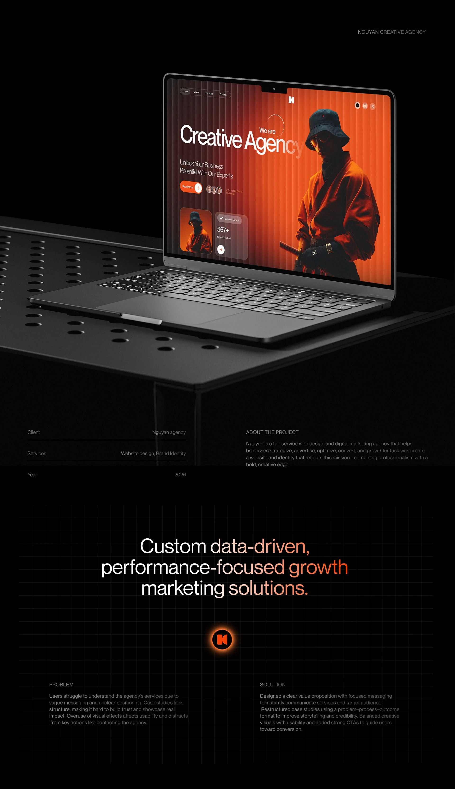
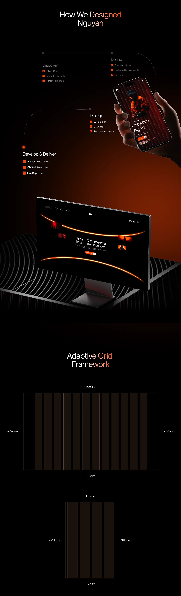

Nguyan
Custom, data-driven, performance-focused growth marketing solutions: a one-page creative agency website built around a bold orange-on-black visual identity, designed to feel like a studio with real creative confidence rather than a generic template.

Process
The design process followed four stages (Discover, Define, Design, and Develop & Deliver), moving from target-audience and competitor analysis through to the final interface. An adaptive grid framework (a 12-column system with defined gutter and margin rules) underpins every section, so the dramatic full-bleed photography and dense text sections still line up consistently.

The complete interface
As a one-page agency site, the whole story has to work as a single continuous scroll: hero, value proposition ("Design that works. Simple. Effective."), service stats (70% faster, 64K+ tracked, 85,000+ clients), client testimonials, a "From Concepts Into Interaction" process section, and a global-reach map, all in one consistent orange-and-black visual language, with a dedicated visual-language section for typography (Simonetta, Neue Montreal) at the close.
Outcome
A creative agency site that commits fully to one bold visual mood instead of hedging toward something safer: dramatic photography, a confident grid, and a tight two-typeface system carried consistently from the hero through to the footer.
The discipline here was restraint on a one-page format: making sure every section earned its place in a single scroll, rather than letting the page sprawl the way one-page agency sites often do.